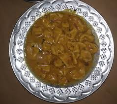
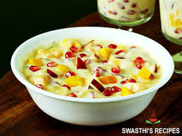
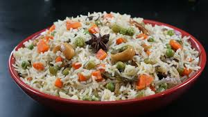

1. DAL PITHI

Ingredients:
- 1 cup wheat flour
- 1 cup whole wheat flour
- 4 tsp ghee
- water
- 1 tsp turmeric powder
- 1/2 tsp red chili powder
- Salt: to test
- 1 & 1/2 tsp cumin seeds
- 1/4 tsp asafoetida
- 1/4 tsp carom seeds
- 1/2 tsp red chili powder
- 2 red & green chillies
- 3-4 cloves, finely chopped garlic
- 1 inch-piece, finely chopped ginger
- 1 medium onion, chopped
- 1 medium tomato, chopped
Instructions:
- prepare the dough
- in a mixing bowl, combine the wheat flower
- add a teaspoon of ghee
- prepare the dal
- in a pressure cooker, add the mixed dal, turmeric powder, salt, a pinch of hing, and water.
- Pressure cook for 2-3 whistles or until the dal is cooked but not completely mashed.
- Cook Pithi in Dal
- Divide the dough into small balls and roll them into thin circles.
- Add the rolled pithis to the cooked dal and cook for 10-15 minutes until the pithis are fully cooked and have absorbed the flavors of the dal.
- Prepare the tempering
- In a small pan, heat ghee and add cumin seeds, carom seeds, red chili powder, chopped garlic, ginger, onions, and tomatoes.
- Sauté until the onions are golden brown and the tomatoes are soft.
- Pour the tempering over the cooked dal and pithis. Mix well.
Serving:
- Garnish with fresh coriander leaves.
- Serve hot, optionally With a squeeze or lemon juice, pickle, or papad.
Back to Top
2. DAL BATI

Ingredients:
- 2 Cups Whole Wheat Flour
- 1/2 Cup Semolina (Rava)
- 3 Cup Ghee
- 1 Cup Mixed Dal (Toor, Chana, Moong, Urad)
- 1 tsp Turmeric Powder
- 1/2 tsp Red Chili Powder, and garam masala
- Salt to taste
- 1 tsp Cumin Seeds
- 1/4 tsp Asafoetida (Hing)
- 1/4 tsp Carom Seeds (Ajwain)
- 2 Green Chilies, finely chopped
- 3-4 Cloves of Garlic, finely chopped
- 1 inch piece of Ginger, finely chopped
- 1 Medium Onion, chopped
- 1 Medium Tomato, chopped
Instructions:
- Prepare the Bati
- In a large mixing bowl, combine whole wheat flour, semolina, and a pinch of salt.
- Add ghee to the flour mixture and mix well until it resembles coarse crumbs.
- Gradually add water and knead the mixture into a stiff dough. Cover the dough and let it rest for 30 minutes.
- Divide the dough into small equal portions and shape them into round balls (battis).
- Preheat the oven to 180°C (350°F). Place the battis on a baking tray and bake for 25-30 minutes or until they are golden brown and cooked through.
- Once done, immediately dip each hot bati in to a bowl of melted ghee and set aside.
- Prepare the Dal
- Wash the soaked lentils and add them to a pressure cooker with 3 cups water, turmeric, and salt.Pressure cook for 3-4 whistles until completely mushy.
- Heat ghee in a pan. add cumin seeds and hing.
- Add onion,ginger-garlic past, and green chilies. Saute until the onions are golden brown.
- Add the tomato, red chili powder, coriander powder, and garam masala. cook for 2-3 min. until tomato are soft.
- Pour the boiled dal in to this mixture. Add more water to adjust the consistency to your liking. Simmer for 5 min..
Serving:
- Garnish with fresh coriander leaves.
- Pour hot dal over the bati
Back to Top
3. Custard

Ingredients:
- 2 cups milk
- 2 tbsp custard powder
- 4 tbsp sugar
- 1/2 tsp vanilla extract (optional)
Instructions:
- In a small bowl, mix the custard powder with a few tablespoons of milk to make a smooth paste. Set aside.
- In a saucepan, heat the remaining milk and sugar over medium heat until the sugar is dissolved and the milk is hot but not boiling.
- Gradually add the custard paste to the hot milk, stirring continuously to prevent lumps from forming.
- Continue to cook the mixture, stirring constantly, until it thickens to your desired consistency. This usually takes about 5-7 minutes.
- Remove from heat and stir in vanilla extract if using. Let it cool slightly before serving.
Serving:
- Serve the custard warm or chilled, as per your preference.
- You can also top it with fresh fruits, nuts, or a sprinkle of cinnamon for added flavor.
Back to Top
4. Pulao

Ingredients:
- 1 cup basmati rice
- 2 cups water
- 1 tbsp ghee or oil
- 1 small onion, thinly sliced
- 1-2 green chilies, slit
- 1 tsp cumin seeds
- 1 bay leaf
- 2-3 cloves
- 1-inch cinnamon stick
- Salt to taste
Instructions:
- Rinse the basmati rice under cold water until the water runs clear. Soak the rice in water for 20-30 minutes, then drain.
- In a saucepan, heat ghee or oil over medium heat. Add cumin seeds, bay leaf, cloves, and cinnamon stick. Sauté for a few seconds until fragrant.
- Add the sliced onions and green chilies. Sauté until the onions are golden brown.
- Add the soaked and drained rice to the saucepan. Stir gently to coat the rice with the spices and ghee.
- Add water and salt to taste. Bring to a boil, then reduce the heat to low, cover, and simmer for 15-20 minutes or until the rice is cooked and all the water is absorbed.
- Remove from heat and let it sit covered for 5 minutes. Fluff the rice with a fork before serving.
Serving:
- Serve the pulao hot, garnished with fresh coriander leaves if desired.
- Pulao can be enjoyed on its own or paired with raita, curry, or a side of vegetables.
Back to Top
Feedback Form